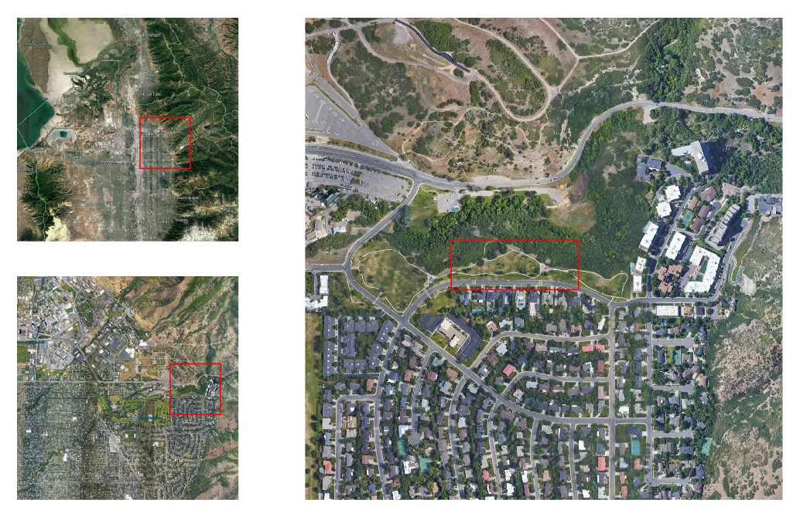
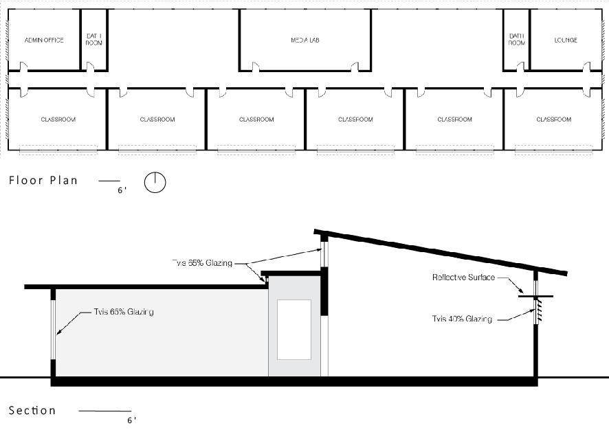
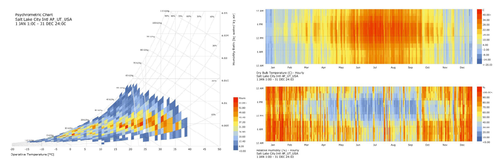
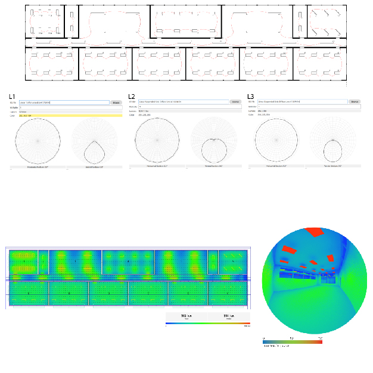
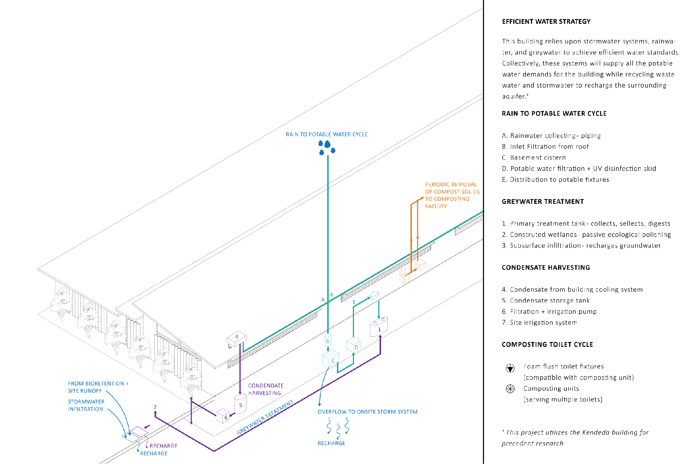
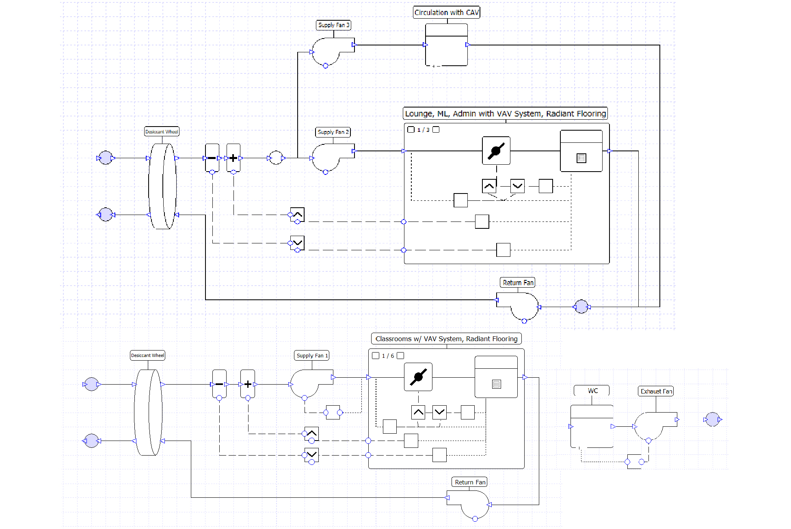
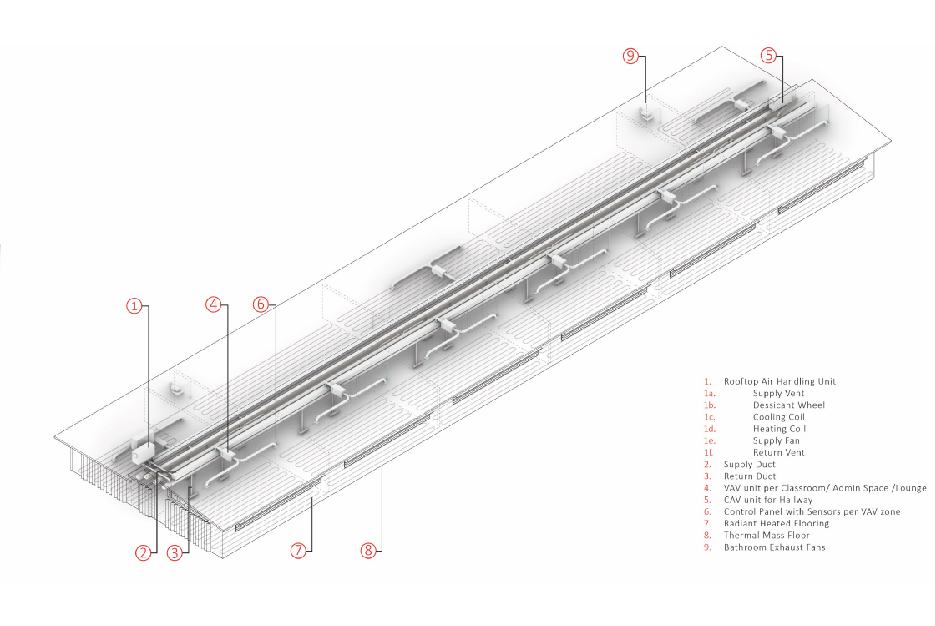

Environmental Systems
Schematic design and analysis of a simple K-12 school wing
Laudeman, Sara M; Vaivodiss, Robert; Schultz, Madison; Cioffi, Jackson; Brown, Zachary
ARCH 6532 - TR | Spring 2020 | Georgia Institute of Technology
This group project demonstrates an understanding of environmental design concepts and tools for modeling building systems. A simple K-12 school wing was developed consisting of six classroom spaces, a media lab, an admin space, two restrooms, and a teacher lounge. The program should function as an adult education center in the evenings and on weekends while providing adequate resources for teachers and students during the day. The project is sited in eastern Salt Lake City, Utah on the edge of a residential development that has recently expanded. The site runs predominantly east-west, and the project orients classroom spaces to the south with the admin, media lab, and lounge spaces on the north side. Circulation spaces with large windows bring daylight into the core of the building.



The most impactful design strategies for Salt Lake City are evaporative cooling, internal heat game, sun shading, and passive solar direct gain. 45.6% of the hours require heating and humidification to be brought into the comfort range. Natural ventilation accounts for only 6.6% of the comfort hours, and can be accomplished using cross ventilation through spaces, where appropriate. To capture the most benefit possible, a close building envelope should be employed to account for internal heat gain. An evaporative cooling tower might also be employed. In the classroom spaces especially, care should be taken to ensure that there is daylight availability as well as direct sunlight in the winter for thermal mass in the floor.
The project assumes classrooms will be to the south to challenge design for daylighting control. Office spaces, media labs, lounges, and circulation will be to the north to benefit from indirect lighting and the ability to utilize larger WWRs. An additional effect of the classrooms facing south is that smaller lighting windows allow for larger usable wall areas on the interior – wall space is in high demand in K-12 classrooms. In the design case, small daylighting windows on the south facade allow sunlight through louvers. A lightshelf reflects sunlight onto the sloped ceiling, and a clerestory to the north provides the potential for cross ventilation. Clerestories on the circulation hall work with the gathering spaces on the north to provide daylight to the circulation core.


The building analysis was done in Climate Studio. Daylight availability and annual solar exposure were evaluated against the LEED v4 criteria, along along with DGP and point in time illuminance. Using the design schemes above, we were able to reduce the DGP to imperceptible levels at most points in the year. A potential electric lighting scheme was also developed using Climate Studio to confirm lighting potentials. Above, the reflected ceiling plan and heatmap show effective lighting in all areas.
In addition to lighting analyses, schematic development of water management systems and HVAC systems was completed. Using precedents such as the Kendeda Building on the campus of the Georgia Institute of Technology, a scheme for managing water consumption through composting toilets, condensation reclamation, and xeriscaping was developed. The HVAC design employs two separate systems to allow for the use of the support spaces and classroom spaces on separate schedules. While this may incur greater construction costs, it has the potential to save money over the life of the building. The TAS diagram shows the HVAC circuit, which is then represented in the accompanying axon.


